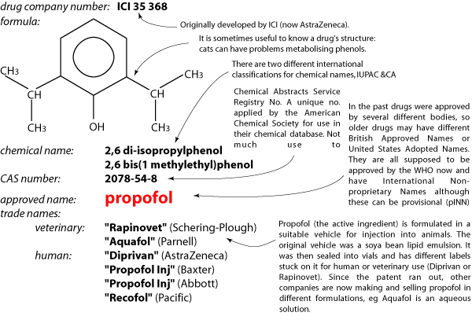

This is a constant source of confusion since every drug may have several different names. You will be expected to know the drug by its approved name but you may come across the other names in scientific papers or advertising literature. Some older drugs have different approved names in different countries; eg, the drug known as pethidine in most countries is called meperidine in the USA. This can lead to confusion when reading textbooks! New Zealand usually uses BANs.
Drugs take a long time and a lot of money to develop and win government approval. The drug companies thus patent new drugs which gives them exclusive rights to sell the drugs for a specific length of time (15 - 20 years). They advertise the drug under their trade name in the hope that vets will continue to think of the drug by the trade name after the patent expires and other firms can make and sell the drug (under different trade names). Drugs which have been around for a while and for which there is a big market will be made by several different companies and have several different trade names, eg xylazine is sold as "Bomazine", "Reazine", "Thiazine" and "Xylase" as well as the original preparation "Rompun". (Trade names vary from country to country, these are just the ones in NZ.) On the other hand, old and cheap drugs (on which there is very little profit to be made) are usually sold by their approved names eg, morphine chloride (BP). The (BP) means that it has been made to standards specified in the British Pharmacopoeia. You may also see USP, USNF (national formulary) and Eur P.
The approved name of a drug can be found if you know any of the other names
by looking in the Merck Index (in the library). (This is a different book from
the Merck (Veterinary) Manual.)
Approved names are by convention in lower case: trade names are capitalised.
Learn the approved name!

Propofol, an anaesthetic, has lots of possible names!